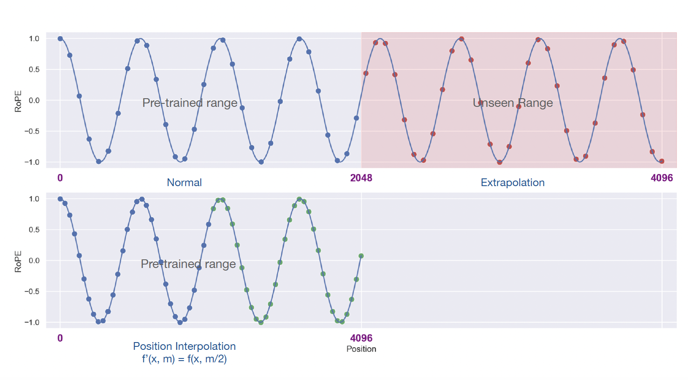
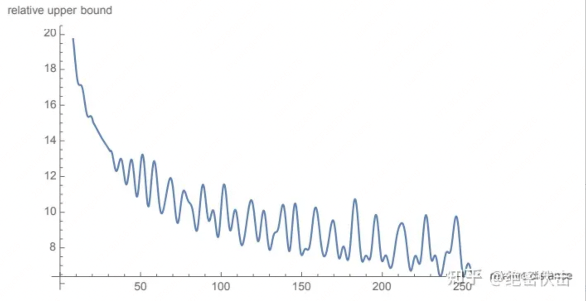

Extending context window of LLMs#
Note
We present Position Interpolation (PI)[] that extends the context window sizes of RoPE[SLP+23]-based pretrained LLMs such as LLaMA[] models to up to 32768 with minimal fine-tuning (within 1000 steps), demonstrating strong empirical results on various tasks that require long context. Meanwhile, the extended model by Position Interpolation preserve quality relatively well on tasks within its original context window.
Background: Rotary Position Embedding (RoPE)#
Transformer models require explicit positional information to be injected, typically in the form of positional encodings, to represent the order of inputs. We consider Rotary Position Embedding, which is the position encoding used in the LLaMA model.
Given a position index \(m\in[0, c)\) and an embedding vector \(\mathbf{x} := [x_0, x_1, . . . , x_{d−1}]^{\intercal}\), where \(d\) is the dimension of the attention head, RoPE defines a vector-valued complex function \(f(\mathbf{x}, m)\) as follows
where \(i:=\sqrt{-1}\) is the imaginary unit and \(\theta_{j}=10000^{-2j/d}\). Using RoPE, the self-attention score
is only dependent on relative position \(m− n\) through trigonometric functions. Here \(\mathbf{q}\) and \(\mathbf{k}\) are the query and key vector for a specific attention head. At each layer, RoPE is applied on both query and key embeddings for computing attention scores.
Tip
\(\left \langle x,y \right \rangle := x\bar{y}\quad \text{for }x,y\in\mathbb{C}\) and write complex numbers in the polar coordinate system. Similarily:
Position interpolation#
Large language models (LLMs) typically come with a pre-defined context window size. For example, inputs to LLaMA models must be fewer than 2048 tokens. This pre-set context window limit is frequently exceeded in application. However, training an LLM from scratch with long context windows requires significant investments. This naturally leads to a question: Can we extend the context window of an existing pre-trained LLM?
One straightforward approach is to fine-tune an existing pre-trained Transformer with a longer context window. However, empirically, we found that models trained this way adapt to long context windows very slowly.
Here, we introduce Position Interpolation to enable context window extensions for certain existing pre-trained LLMs, including LLaMA. The key idea is, instead of extrapolation, we directly down-scale the position indices so that the maximum position index matches the previous context window limit in the pre-training stage.

高频外推低频内插#
低维（\(i\to 0\)）部分频率高（\(\theta_{i}\to 1\)）
高维（\(i\to d/2-1\)）部分频率低（\(\theta_{i}\to 1/10000\)）
原本在低维度上，旋转角度较大，意味着这些维度上的信号变化非常迅速，能够精细地区分相邻位置。如果在低维度进行内插，对用低维区分不同位置间的能力影响更大，这种现象称之为高频信息的损失。因此我们可采用高频外推，低频内插的方式。
YaRN: Efficient ContextWindow Extension of Large Language Models#
Loss of High Frequency information - “NTK-aware” interpolation#
Instead of scaling every dimension of RoPE equally by a factor \(s=\frac{L'}{L}\), we spread out the interpolation pressure across multiple dimensions by scaling high frequencies less and low frequencies more.
Definition 1 The “NTK-aware” interpolation is a modification of RoPE with the following functions.
where
Tip
For small \(d\):
thus extrapolation.
To let \((L', b')\) equals to \((L, b)\) on the lowest frequency (\(d=\frac{|D|}{2}-1\)), thus interpolation, we have
this leads to \(b' = b\cdot s^{\frac{|D|}{|D|-2}}\).
Loss of Relative Local Distances - “NTK-by-parts” interpolation#
We choose not to interpolate the higher frequency dimensions at all while always interpolating the lower frequency dimensions. In particular,
if the wavelength \(\lambda\) is much smaller than the context size \(L\), we do not interpolate;
if the wavelength \(\lambda\) is equal to or bigger than the context size \(L\), we want to only interpolate and avoid any extrapolation (unlike the previous “NTK-aware” method);
dimensions in-between can have a bit of both, similar to the “NTK-aware” interpolation.
In the \(d\)-th hidden state, the ratio \(r\) depends on \(d\) in the following way:
In order to define the boundary of the different interpolation strategies as above, we introduce two extra parameters \(\alpha,\beta\) and define the ramp function \(\gamma\) to be
With the help of the ramp function, the “NTK-by-parts” method can be described as follows.
Definition 2 The “NTK-by-parts” interpolation is a modification of RoPE with the following functions
Dynamic Scaling - “Dynamic NTK” interpolation#
In a lot of use cases, multiple forward-passes are performed with varying sequence lengths from 1 to the maximal context size. A typical example is the autoregressive generation where the sequence lengths increment by 1 after each step. There are two ways of applying an interpolation method that uses a scale factor \(s\):
Fixed scale factor \(s=L'/L\).
In each forward-pass, the position embedding updates the scale factor \(s=\max(1, l'/L)\) where \(l'\) is the sequence length of the current sequence.
YaRN#
In addition to the previous interpolation techniques, we also observe that introducing a temperature t on the logits before the attention softmax has a uniform impact on perplexity, that is
We can use a “length scaling” trick which scales both \(\mathbf{q}_{m}\) and \(\mathbf{k}_{n}\) by a constant factor \(\sqrt{{1}/{t}}\) by simply scaling the complex RoPE embeddings by the same amount. Combining it with the “NTK-by-parts” interpolation, we have the YaRN method.
Definition 3 By the “YaRN method”, we refer to a combination of the attention scaling and the “NTK-by-parts” interpolation.
RoPE 的远程衰减#
计算 \(a(m,n)\) 时：
\(m\) 和 \(n\) 越近，\(\mathbf{R}_{n-m}\) 旋转得越少，高频维度少低频维度多。
\(m\) 和 \(n\) 越远，\(\mathbf{R}_{n-m}\) 旋转得越多，有很多高频维度转了很多圈，随机性很大，一部分正负抵消一部分振荡。
最终导致 RoPE 远程衰减曲线如下：
